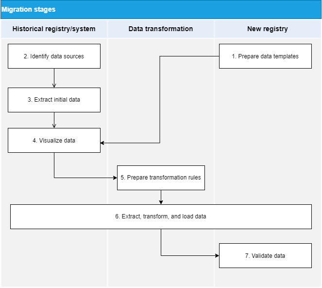
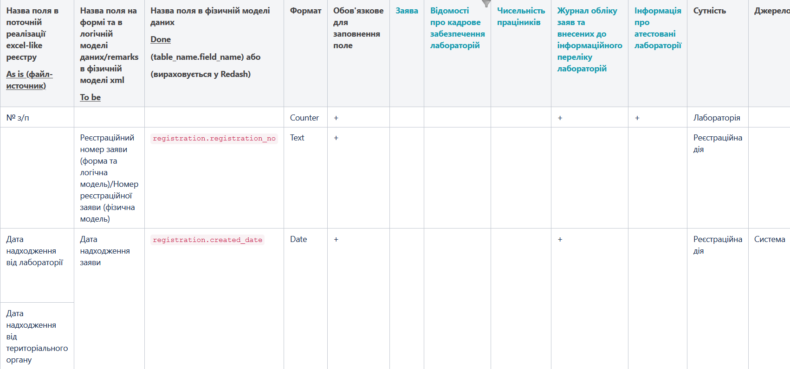

Preparing data for migration
- 1. Introduction
- 2. Key issues to consider during the preparation stage
- 3. Data migration readiness checklist
- 4. Data migration stages
1. Introduction
Uploading data into the system, whether initial or ongoing, is implemented via CSV files. Before migrating data from an old registry to the new one, we recommend resolving organizational issues between the data owner and registry developer.
2. Key issues to consider during the preparation stage
-
Who prepares the files for the upload: the data owner or registry developer?
-
Will the file transfer be accompanied by a handover certificate, protocol, accompanying letter, or as part of the standard working procedures?
-
If the data contains personal information, you need to work out security requirements.
-
Determine the format of interactions with the developer during the file upload process. This may include error notifications specifying the issue type and required changes or an official letter to notify the data owner of the successful upload.
-
Other organizational issues.
3. Data migration readiness checklist
-
Describe the format and structure of fields for the "To be" data model.
-
Map data model fields between the "As is" and "To be" states.
-
Define the rules and requirements for the upload files (templates).
4. Data migration stages
Data migration stages are presented in the following diagram.

4.1. Preparing data upload templates
The data upload template contains technical descriptions of the data tables to load, algorithms, and rules of loading. Each template is commonly used for one or several related tables in the new data model.
A template contains the following:
-
A description of all the fields in the CSV file, including:
-
Field name
-
Whether the field is required or not
-
Sample value
-
Comment
-
-
A description of the rules of filling the table in the new registry based on the load data. This may include processing order in case of several related tables, search algorithms by key fields, uniqueness of names, and so on.
-
A description of how exactly the table fields in the new registry should be filled in case the goal differs from a one-to-one data transfer from a file. Take reference fields, for example.
During this stage, the new registry must be ready for the initial data upload.
4.2. Identifying data sources
We recommend starting this stage simultaneously with preparing the data upload templates. At this stage, the experts on the customer’s side determine the sources, systems, and types of data that can be downloaded.
It is also worth determining the data you might need. For large migration projects, identifying a comprehensive list of data sources will take some time and may continue based on subsequent stages.
In practice, ensuring the integrity of information may require digitizing data from paper sources and even interviewing key employees. However, it is necessary to discover as much relevant data as possible.
4.3. Extracting source data
Extracting data from historical registries or systems can take some time, especially if the registry consists of several subsystems handled by different departments. You need to consider this during the test and final migrations.
| Keep in mind that downloading the data in full may not always be feasible due to security or other considerations, in which case loading is limited to the structure and several test records. This may lead to validation errors and additional efforts to fix them during the test and final data loads. |
Planning the test loads from historical registries in advance can help minimize this issue.
4.4. Data mapping
In general, data mapping refers to the process of establishing a connection between the data fields from one system to another. In our case, we are mapping the old and new registries, or source data and the data to be loaded. The mapping stage is the most resource-intensive and can take up more than 50% of all migration work. This stage involves the entire working group of the migration project.
The data mapping process involves the following phases:
-
tables mapping
-
fields mapping
4.4.1. Tables mapping
Tables mapping, or templates mapping, is the process of mapping the source data tables and data upload templates. The relationship can be one-to-one (1:1) or one-to-many (N:N). The result of this work is the table mapping registry that needs to be compiled and maintained. This phase is the prerequisite for the next phase of fields mapping and tracking the overall mapping status.
Here is an example of how a table mapping registry may look like:
| New registry template name | Source file name | Source file compilation rules | Responsible person | Status | Comment |
|---|---|---|---|---|---|
|
|
File requirements:
|
Jared O. Holmes |
In progress |
Test comment |
4.4.2. Fields mapping
Fields mapping is the process of mapping the fields within the current tables mapping. The result of this work is the fields mapping registry.
Here is an example of how a fields mapping registry may look like for a registry of certified laboratories:

During this stage, you also need to perform data normalization.
4.5. Preparing transformation rules
Based on the approved fields mapping registry, the experts on the customer’s side must develop the data transformation rules. This stage can be performed simultaneously with fields mapping.
To speed up the process of preparing for migration and beyond, use the registry’s initial data load feature. After the mapping stage, you should have the template files filled out according to the fields format and other requirements.
4.5.1. Supported file versions and formats
-
Only CSV files are supported for data uploading.
-
Pivot tables are not supported.
4.5.1.1. Analyzing the upload files
-
CSV files support only one table per sheet.
-
Each column must have a header whose name must correspond to the field name in the data model (field name in the database).
-
Data cannot contain merged rows or columns.
-
Values in CSV files must be separated by commas.
-
There are no empty rows above the headers.
Note that CSV files do not support the same data formats as Excel. If a CSV file contains date or time fields, they are stored as strings. Therefore, you must ensure the values that start with zero (such as codes, phone numbers, date, time, and so on) are stored correctly.
| For details, see File requirements for automatic uploads to the database. |
4.6. Extract, transform, and load
The previous steps mark the end of the preparation stage. By now, all data sources are identified, the data is downloaded, the upload templates for the target database are ready, data mapping is prepared, and the transformation rules are defined.
From this stage onwards, you can organize and run the test and final migrations. Note that running several tests before the final migration is highly recommended.
Test migrations allow you to:
-
Discover conversion and data loading errors.
-
Conduct a preliminary assessment of the quality of the data uploaded to the new registry.
-
Draw up or update the final migration plan based on test results.
4.7. Data validation
You need to assess the quality of the loaded data both after test migrations and after the final one.
It is worth noting that various data assessments and normalization steps should be carried out throughout the migration process. Consider what you can do during the current stage to avoid having issues during the next stages.
For example:
-
Check for duplicates by key fields. This can and should be done even with the original data.
-
Define field types.
-
Check link integrity.
-
Check for mathematical inconsistencies.
-
Check that the mandatory fields are filled out.
-
Check for invalid symbols, especially for key fields.
-
Check that the string fields comply with the new registry field types and do not exceed the length limits.
-
Check for spelling errors.
-
Choose the delimiter type. Commas and semicolons may occur within the same line inside the directory, in which case it is advisable to use other characters—for example,
#or$.
After the final migration is completed per the migration strategy and plan, a decision must be made regarding the further usage of the historical registry and the procedure for putting the new registry into operation.
| Each data migration project requires careful preparation and an individual plan. However, the overall migration pattern is almost identical in all cases, regardless of the type of registries being migrated, the number of databases, and other factors. |